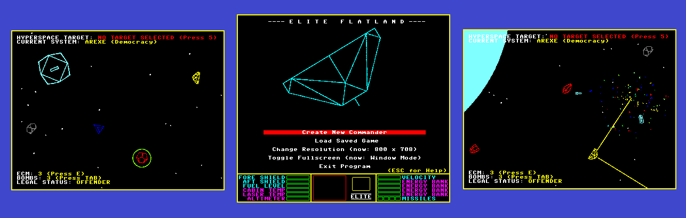
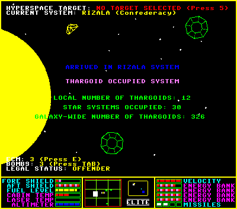
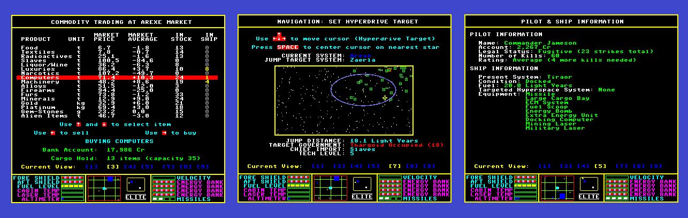
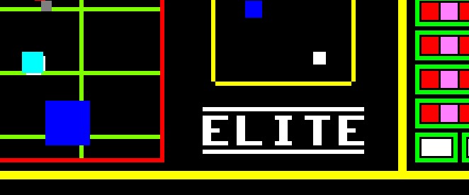

The classic '84 spacegame, reimagined using one less dimension (and one additional objective). Join GalCop
to help stop the Thargoid Invasion!

"The Galactic Cooperative of Worlds (GalCop) has issued a
galaxy-wide emergency alert. An intelligent and space-faring
(and hostile) alien race has invaded and occupied 31 of our
galaxy's 256 star systems.
These aliens, known as the Thargoids, are showing no sign of
stopping their apparent takeover of all our worlds. GalCop is
calling for all volunteers, regardless of age, sex, or legal
status, to join the fight and help end this terrifying menace.
Without help, the galactic military by itself doesn't stand a
chance. YOUR help is needed! Our species' very survival
depends on it!"

The full game is available as a single .exe installer (for Windows machines). Also available
is the python source code with all assets for anyone who is interested in the
programming side of things.
Both Python 3.5.1 and Pygame 1.9.3 are needed to run the source code version.

Frequently Asked Questions:
Q. Why are some stars on the Galactic Map circled in green?
A. Those star systems have been taken over by a Thargoid invasion fleet.
The galaxy you live in (small as it is, with only 256 stars) is under
attack by an alien race known as the Thargoids. Fighters from worlds
all over have banded together, along with the Galactic Cooperative of
Worlds (GalCop) military force, to liberate systems from Thargoid
occupancy, one star system at a time. And you can help join the fight!
Q. What are Fuel Scoops used for?
A. Several things. Once installed on your ship, you can fly close to a
star and "skim" fuel from it, saving you lots of money at the fuel
pump. Also, you can pick up items that may be floating through space,
such as a cargo container from that pirate ship you just blew up,
or an asteroid shard you just created by blasting an asteroid with
your mining laser.
Q. These keyboard controls are terrible. How can I remap them?
A. You can't in this version of the game. Unless you are a Python coder,
then you can. I would like to add this feature in a later version of
the game, but I have a four year old I take care of at home, so that's
not likely to happen any time soon. If you're able to add that feature
(or any other features or bug fixes) please share with the rest of
us!
Q. What good is the escape pod? Seems dangerous...
A. It's a great way to clear your legal record. If you've fallen down
the rabbit hole of a criminal life, you'll find yourself unable to
visit "civilized" systems anymore without being constantly harassed
by bounty hunters and police. Abandon your ship and float to
a nearby space station, and your ship will be re-instated (minus
cargo items), but your legal status will be cleared. (Useful tip:
there's another way to clear your legal status - it involves killing
a lot of Thargoids...)
Q. I'm not clear about what actions change my legal status...
A. There are lots of different ways you can tarnish your record. Destroying
any civilians (Traders, Bounty Hunters) will certainly get you a
citation. So much as fire at the police or a space station, and you
will be cited. Buying or selling illegal items (slaves, narcotics, or
firearms) in a civilized system (any type of government other than
Anarchy or Feudal) will also ping you. You are allowed
3 "strikes", and after that, you are considered a FUGITIVE.
Q. You made the game too easy. I can go from a new game to a fully loaded
ship with lots of spare cash in like, 45 minutes. Why did you make
it like this?
A. I made the game I wanted to play. I enjoyed so many gameplay elements
of the original Elite (by David Braben and Ian Bell), but I no longer
have the patience or free time needed to play it, even on an emulator
that can speed things up a bit. I also
tried to add a balance to the game which made many gameplay elements
more accessible. Mining, for example, is a valid alternative
to trading or bounty hunting as a means to earn enough money to deck
out your ship and join the war against the Thargoids. In short, I love
the classic game but wanted to make a version I could have fun with
in short bursts of time (say, 15 minutes or so).
Please send any other questions or comments to
dvanaria@gmail.com.
I appreciate your feedback!

(Original "Elite" copyright Ian Bell and David Braben, 1984)